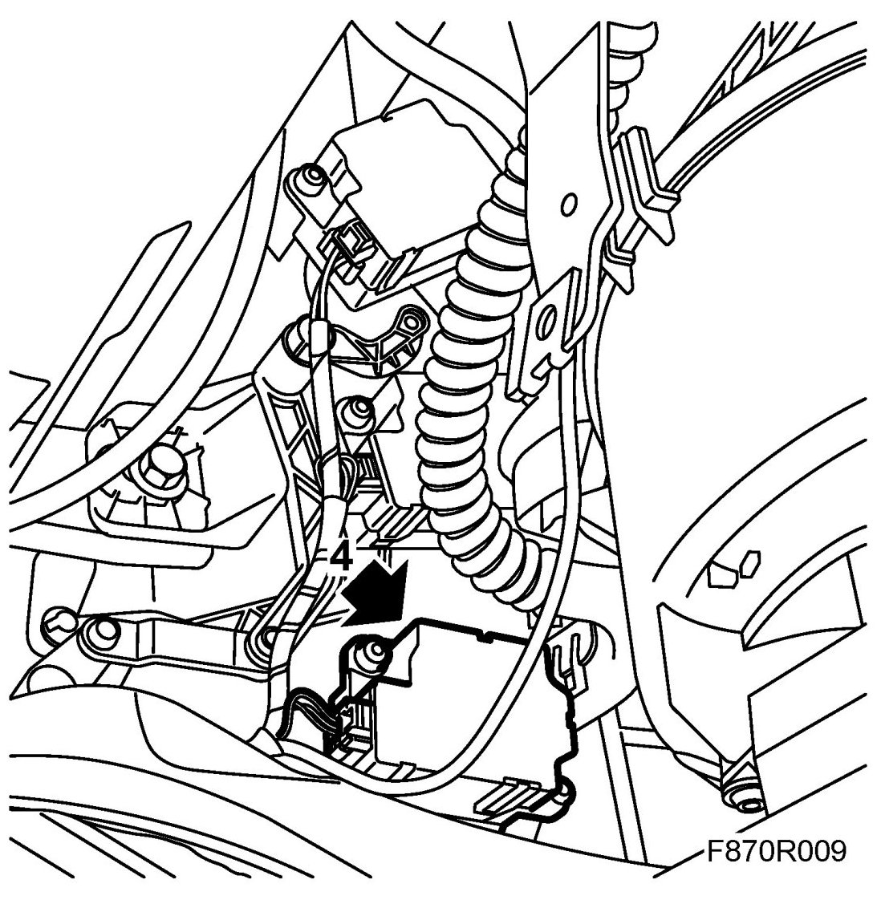
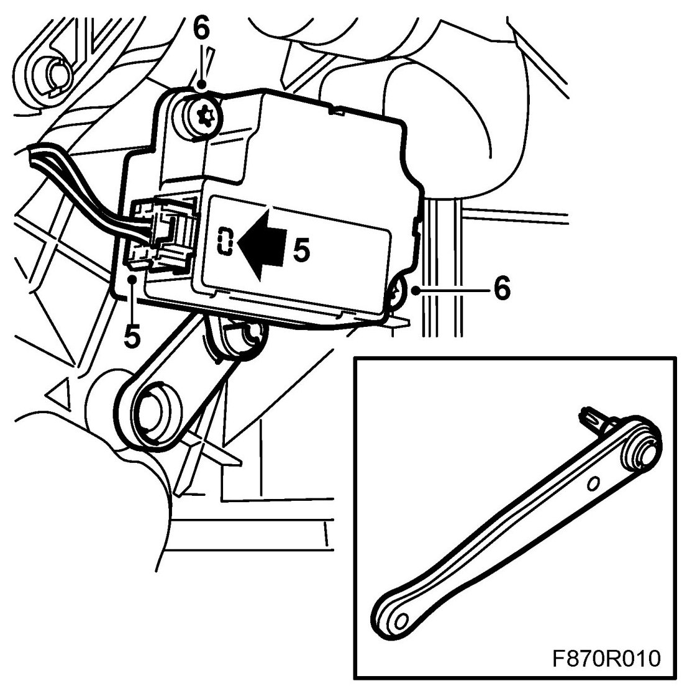
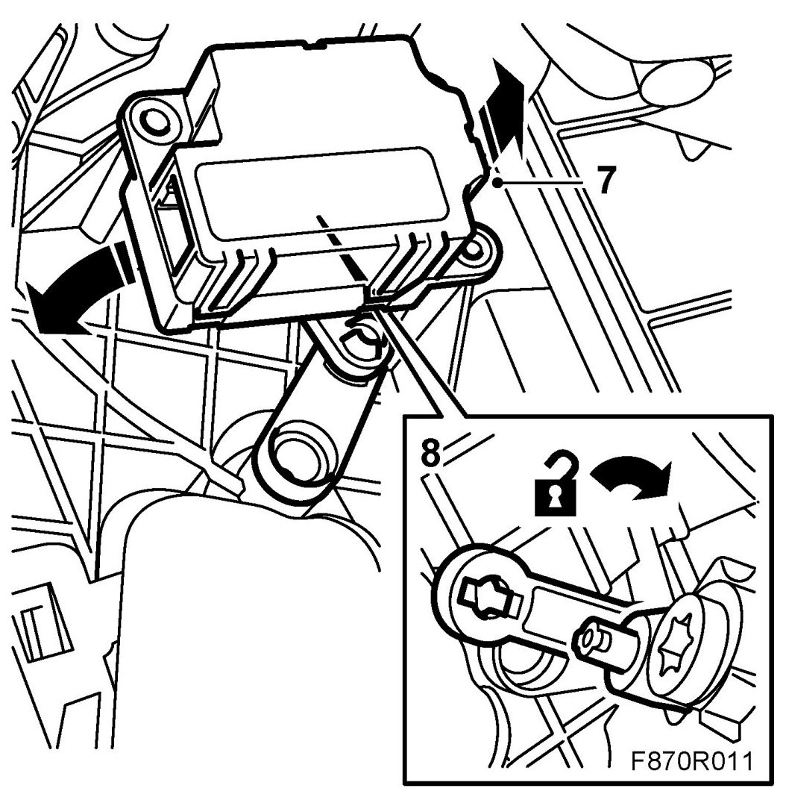
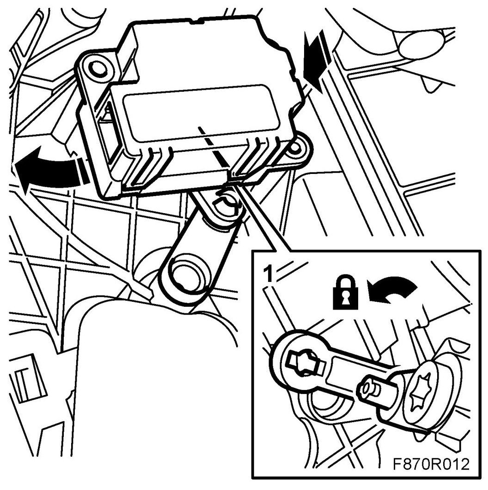
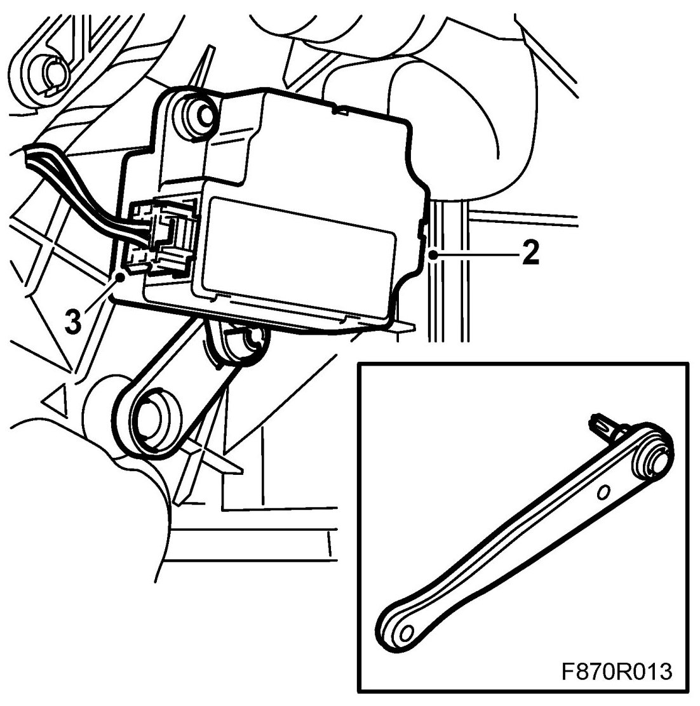

Right Mixed Air Stepping Motor
Right Mixed Air Stepping Motor
To remove
1. Remove the glove box.
2. Dismantle the floor console's front side panel on the passenger side.
3. Dismantle the acoustic insulation on the passenger side.
4. Dismantle the air duct for the floor vent and lift out the air duct through the hole for the glove box. The stepping motor for the right hand mixed air is the lower stepping motor.

5. Dismantle the stepping motor's connector by pressing in the lock and pulling out the connector.

6. Remove the screws from the stepping motor.
7. Dismantle the stepping motor by carefully pulling out the motor from the guide pins. Move the motor backwards and downwards.

8. Dismantle the stepping motor from the heating and ventilation unit's link arm.
To fit
1. Fit the stepping motor to the heating and ventilation unit's link arm.

2. Fit the stepping motor to the heating and ventilation unit.

3. Connect the stepping motor's connector. Make sure the connector locks correctly.
4. Fit the air duct for the floor vent.
5. Fit the passenger side's acoustic insulation.
6. Fit the floor console's front side panel.
7. Fit the glove box.